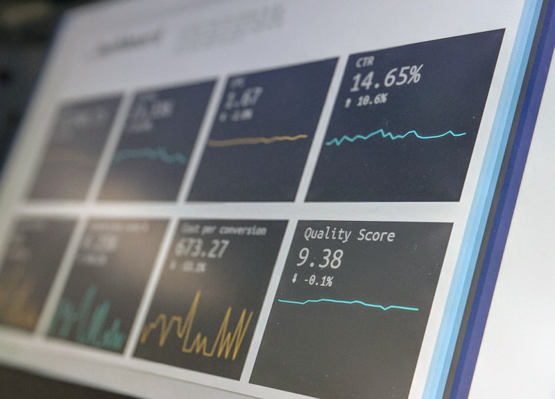

DIGITAL HEALTH INSIGHTS
The Future of Connected Healthcare
Discover how digital diagnostics, healthcare technology, analytics, and connected care are changing the patient journey.

Trending
Topics
Health Tech
How Digital Reports Are Changing Healthcare
The shift to paperless diagnostics is empowering patients to own their medical data...
Read InsightsWhy Real-time Sample Tracking Matters
Bringing transparency, trust, and predictability to the modern laboratory testing process...
Read Insights
How Healthcare Analytics Helps Patients
Understanding the predictive power of analyzing years of consecutive diagnostic test results...
Read Insights